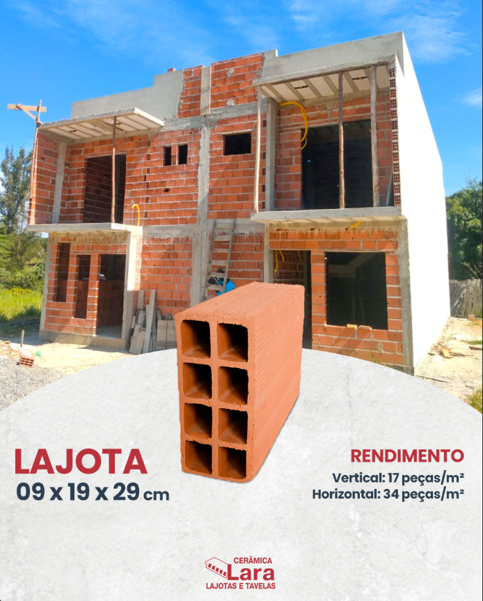
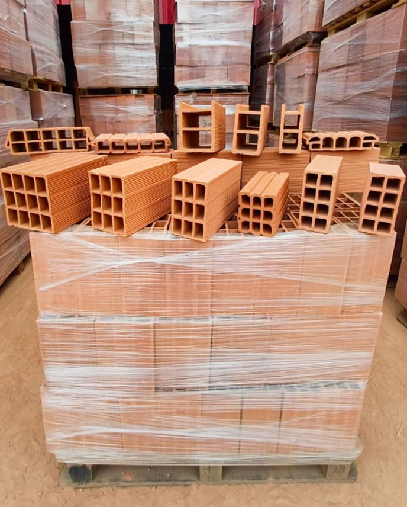
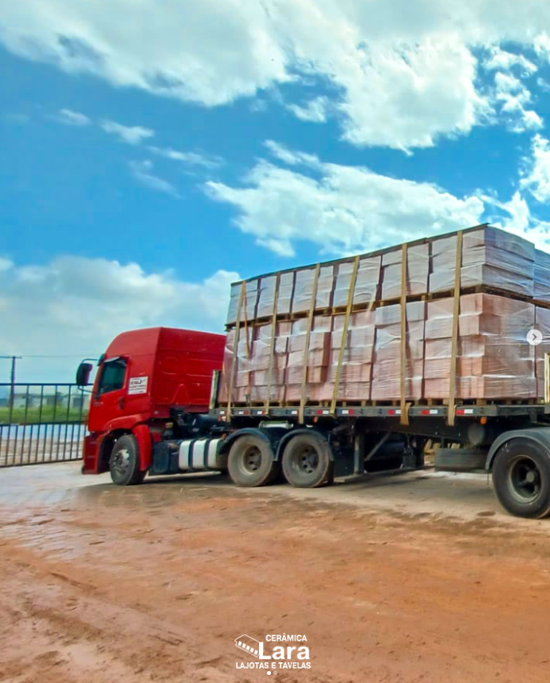
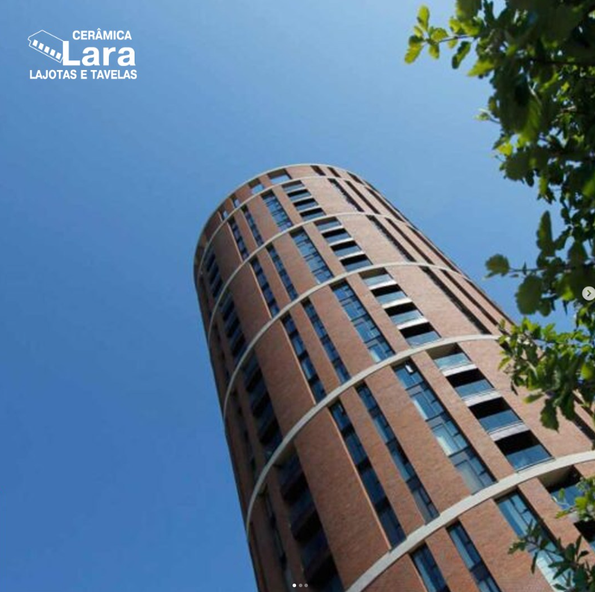
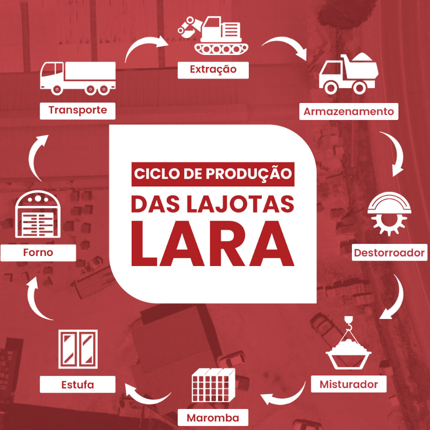

MEDIDA DO CATÁLOGOLINHA CERÂMICA
Lajota 9 × 19 × 29 cm
Para fechamento e divisórias, conforme especificação do seu projeto.
Vertical 17 peças/m²Horizontal 34 peças/m²
DA NOSSA FÁBRICA PARA A SUA OBRA
Blocos cerâmicos direto da fábrica em Cachoeira Paulista. Qualidade e cuidado em cada peça, do primeiro tijolo à sua próxima conquista.

NOSSA LINHA DE PRODUTOS
Da construção à reforma, encontre soluções em cerâmica vermelha para tirar sua obra do papel.

MEDIDA DO CATÁLOGOPara fechamento e divisórias, conforme especificação do seu projeto.
Diferentes formatos para diferentes necessidades. Nossa equipe ajuda você a consultar a opção indicada.
Rendimentos conforme o catálogo da Cerâmica Lara. Para uso estrutural, consulte a ficha técnica e o responsável pelo projeto.

Cuidado que acompanha cada entrega.PROXIMIDADE QUE FAZ A DIFERENÇA
Frota própria para levar os materiais à sua obra. Consulte a cobertura, o frete e os prazos para sua região.
Da preparação da matéria-prima à queima, um processo dedicado à produção das nossas lajotas.
Estamos em Cachoeira Paulista, perto de quem constrói e de quem transforma a nossa região.
Pagamentos com cartões de crédito, débito e aproximação. Consulte as condições com nossa equipe.
CERÂMICA QUE INSPIRA
A cerâmica vermelha também é protagonista na arquitetura. Formas, texturas e tijolos aparentes criam espaços cheios de personalidade.
Conheça esta referência compartilhada em nosso Instagram e descubra novas possibilidades para construir.
Explore nosso Instagram ↗Referência arquitetônica divulgada pela Anicer. Não representa uma obra executada ou fornecida pela Cerâmica Lara.
CONHEÇA NOSSA PRODUÇÃO
Um caminho de transformação até chegar à sua obra.

CONFIANÇA SE CONSTRÓI
Consulte as avaliações dos clientes no Google e conheça suas experiências com a Cerâmica Lara.
Ver avaliações no Google ↗VAMOS CONSTRUIR JUNTOS?
Conte o que você precisa. Nossa equipe ajuda com produtos, disponibilidade e condições de entrega.
Segunda a sexta · 07h30 às 17h30
♿ Entrada e estacionamento acessíveis para cadeirantes.